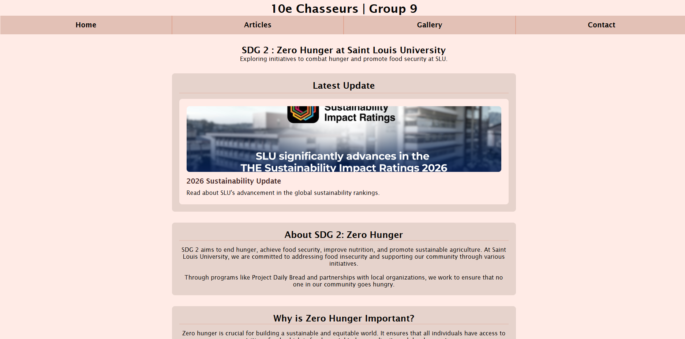
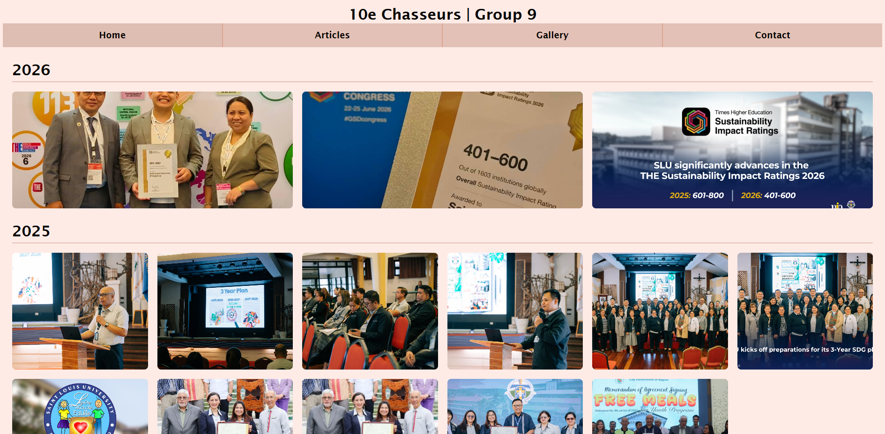
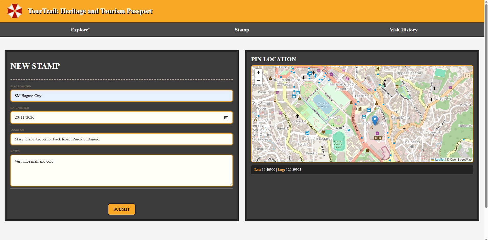

WEB DESIGN
Focused on building responsive, user friendly web interaces from scratch using HTML, CSS, and vanilla JavaScript,
combining smooth UI animations, interactive maps, and foundational backend functionality.
Skills:
- Core Web Technologies: HTML5, CSS3, and Vanilla JavaScript
- Responsive Web: Mobile-first layouts, fluid typography, and cross-device compatibility.
- UI/UX Animations & Transitions: CSS Keyframes, smooth state transitions, interactive accordions, and scroll-reveal effects.
- Interactive Maps & APIs: Embedding custom interactive maps, markers, and tile layers using Leaflet.js and OpenStreetMap
- DOM Manipulation & Interactivity: Dynamic content rendering, event handling, and itneractive media/slideshow components
- Foundational Backend & Data: Basic server-side logic, form handling, and SQL/PHP



Including this website